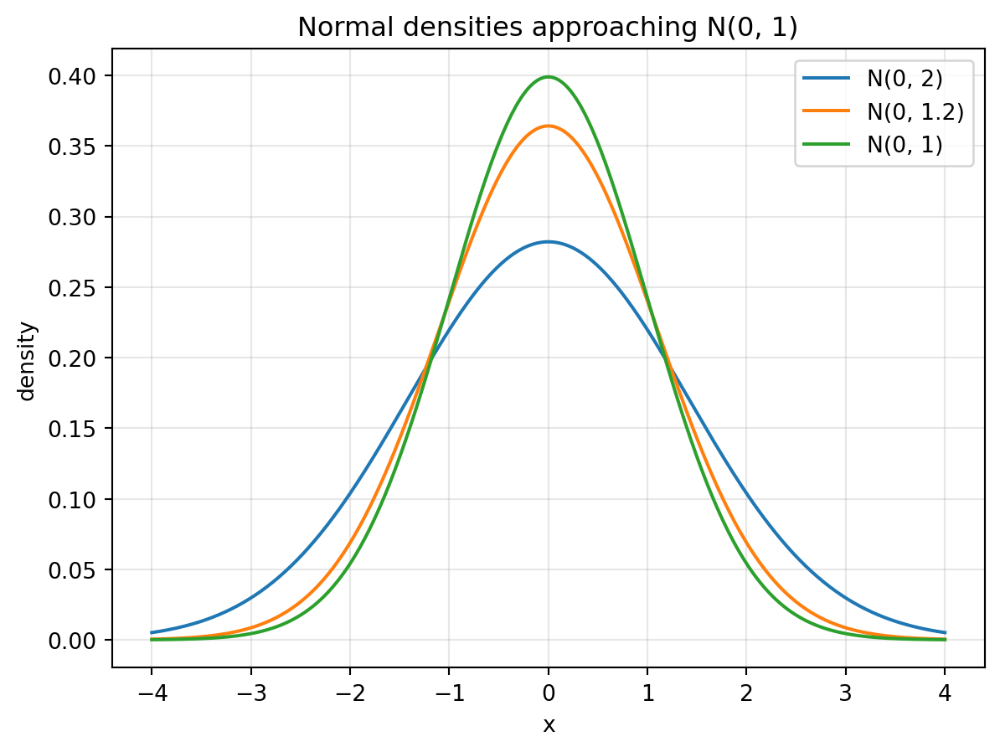

9 Chapter 9: Convergence Theory and Limit Theorems
This chapter develops the mathematical language for describing the limiting behavior of random variables, sample averages, and estimators. It connects convergence modes with the weak law of large numbers, the strong law of large numbers, the central limit theorem, continuous mapping, Slutsky’s theorem, and concentration inequalities.
Topics. Convergence of numbers and functions; sequences of random variables; convergence in distribution, probability, mean, and almost surely; relationships among modes of convergence; weak and strong laws of large numbers; central limit theorem; continuous mapping theorem; Slutsky’s theorem; concentration inequalities and high-dimensional proportion estimation.
10 Overview
This section develops the language needed to describe limiting behavior of random variables, sample averages, and estimators.
In deterministic calculus, a sequence of numbers may converge to a fixed limit. In probability and statistics, the objects that converge are often random variables. Since random variables are functions on an underlying sample space, there are several useful ways for a sequence of random variables to converge: by the shape of the distribution, by probability of large deviation, by average error, or by almost-everywhere sample-path behavior.
TipKey idea
The main question is not only whether \(X_n\) approaches \(X\), but also in what sense it approaches \(X\): \[X_n \xrightarrow{D} X,\qquad X_n \xrightarrow{P} X,\qquad X_n \xrightarrow{L^r} X,\qquad X_n \xrightarrow{a.s.} X.\] These four arrows encode different mathematical meanings and are used for different statistical purposes.
The major results in this section are the weak law of large numbers, the strong law of large numbers, the central limit theorem, the continuous mapping theorem, Slutsky’s theorem, and concentration inequalities.
11 Convergence of Numbers and Functions
This section reviews ordinary deterministic convergence before introducing convergence of random variables.
11.1 Convergence of a sequence of numbers
A sequence of numbers converges when, eventually, all terms remain arbitrarily close to a fixed limiting value.
NoteDefinition
Definition 1 (Convergence of a numerical sequence). A sequence of numbers \(a_1,a_2,a_3,\ldots\) converges to a limit \(a\) if \[\lim_{n\to\infty} a_n=a.\] More precisely, for every \(\epsilon>0\), there exists \(N\in\mathbb{N}\) such that \[|a_n-a|<\epsilon \qquad \text{for all } n>N.\]
TipExample
Example 2 (A basic convergent sequence). Let \[a_n=\frac{n}{n+1}.\] Show that \(a_n\to 1\).
NoteSolution
We have \[\left|\frac{n}{n+1}-1\right|=\left|\frac{n-(n+1)}{n+1}\right|=\frac{1}{n+1}.\] Given \(\epsilon>0\), choose \(N>1/\epsilon-1\). Then for all \(n>N\), \[\frac{1}{n+1}<\epsilon.\] Therefore \(a_n\to 1\).
11.2 Epsilon-delta definition of a limit
The epsilon-delta definition is the formal way to state that the values of a function become close to a limit when the input becomes close to a point.
NoteDefinition
Definition 3 (Limit of a function). We say \[\lim_{x\to a} f(x)=L\] if for every \(\epsilon>0\), there exists \(\delta>0\) such that whenever \[0<|x-a|<\delta,\] it follows that \[|f(x)-L|<\epsilon.\] Here \(\epsilon\) measures how close \(f(x)\) must be to \(L\), and \(\delta\) measures how close \(x\) must be to \(a\).
NoteRemark
Remark 4. The same idea appears repeatedly in probability. In convergence in probability, for example, the tolerance \(\epsilon\) controls how far \(X_n\) can be from \(X\), and the probability of violating that tolerance must go to zero.
WarningPractice Problem
Practice Problem 5 (A quick limit check). Use the epsilon-delta idea to show that \(f(x)=2x+1\) satisfies \[\lim_{x\to 3} f(x)=7.\]
NoteSolution
We compute \[|f(x)-7|=|2x+1-7|=2|x-3|.\] Given \(\epsilon>0\), choose \(\delta=\epsilon/2\). If \(0<|x-3|<\delta\), then \[|f(x)-7|=2|x-3|<2\delta=\epsilon.\] Therefore \(\lim_{x\to 3}(2x+1)=7\).
12 Sequences of Random Variables
This section explains why convergence of random variables is richer than convergence of numbers.
Recall that a random variable is a function \[X:S\to \mathbb{R}\] from a sample space \(S\) to the real numbers. If \(S=\{s_1,\ldots,s_k\}\) is finite, then a random variable is determined by its values \[X(s_i)=x_i,\qquad i=1, \ldots,k.\] A sequence of random variables \[X_1,X_2,X_3,\ldots\] is therefore a sequence of functions \[X_n:S\to \mathbb{R}.\] For each outcome \(s\in S\), the sequence \(X_1(s),X_2(s),\ldots\) is an ordinary sequence of numbers. But random variables also have distributions, probabilities, expectations, and variances. This creates several different modes of convergence.
TipExample
Example 6 (A sequence of random variables on a finite sample space). Let \(S=\{s_1,s_2\}\) with \(\mathbb{P}(s_1)=\mathbb{P}(s_2)=1/2\), and define \[X_n(s_1)=\frac{1}{n},\qquad X_n(s_2)=1+\frac{1}{n}.\] Find the pointwise limit \(X(s)=\lim_{n\to\infty}X_n(s)\).
NoteSolution
For \(s_1\), \[X_n(s_1)=\frac{1}{n}\to 0.\] For \(s_2\), \[X_n(s_2)=1+\frac{1}{n}\to 1.\] Thus the pointwise limiting random variable is \[X(s_1)=0, \qquad X(s_2)=1.\]
13 Convergence in Distribution
This section introduces the weakest and most distribution-centered mode of convergence.
NoteDefinition
Definition 7 (Convergence in distribution). Let \(X_n\) have CDF \(F_n\) and let \(X\) have CDF \(F\). We say that \(X_n\) converges in distribution to \(X\), also called convergence weakly or convergence in law, if \[\lim_{n\to\infty}F_n(x)=F(x)\] for every continuity point \(x\) of \(F\). We write \[X_n \xrightarrow{D} X.\]
TipKey idea
Convergence in distribution means that the overall shape of the distribution of \(X_n\) converges to the overall shape of the distribution of \(X\). It does not necessarily mean that \(X_n\) and \(X\) are close on the same sample space.
TipExample
Example 8 (Normal distributions with variances converging to one). Let \[X_n\sim \operatorname{Normal}\left(0,1+\frac{1}{n}\right).\] Show that \[X_n\xrightarrow{D}\operatorname{Normal}(0,1).\]
NoteSolution
The CDF of \(X_n\) is \[F_n(x)=\Phi\left(\frac{x}{\sqrt{1+1/n}}\right),\] where \(\Phi\) is the standard normal CDF. Since \[\frac{x}{\sqrt{1+1/n}}\to x\] and \(\Phi\) is continuous, \[F_n(x)=\Phi\left(\frac{x}{\sqrt{1+1/n}}\right)\to \Phi(x).\] Therefore \(X_n\xrightarrow{D}N(0,1)\).
WarningPractice Problem
Practice Problem 9 (CDF convergence). Let \(X_n\sim \operatorname{Uniform}(0,1+1/n)\). Show that \(X_n\xrightarrow{D}\operatorname{Uniform}(0,1)\).
NoteSolution
For \(0<x<1\), \[F_n(x)=\frac{x}{1+1/n}\to x.\] For \(x\le 0\), \(F_n(x)=0\to 0\). For \(x>1\), eventually \(x>1+1/n\), so \(F_n(x)=1\to 1\). These are exactly the values of the CDF of \(\operatorname{Uniform}(0,1)\) at its continuity points. Therefore \(X_n\xrightarrow{D}\operatorname{Uniform}(0,1)\).
14 Convergence in Probability
This section introduces the mode of convergence most closely connected to statistical consistency.
NoteDefinition
Definition 10 (Convergence in probability). A sequence \(X_n\) converges in probability to \(X\) if for every \(\epsilon>0\), \[\lim_{n\to\infty}\mathbb{P}(|X_n-X|>\epsilon)=0.\] We write \[X_n\xrightarrow{P}X.\]
TipKey idea
Convergence in probability means that large deviations from the limiting random variable become rare.
TipExample
Example 11 (A shrinking normal sequence). Let \[X_n\sim \operatorname{Normal}\left(0,\frac{1}{n}\right).\] Show that \(X_n\xrightarrow{P}0\), and identify the distributional limit of \(\sqrt nX_n\).
NoteSolution
For any \(\epsilon>0\), Chebyshev’s inequality gives \[\mathbb{P}(|X_n-0|>\epsilon) \le \frac{\operatorname{Var}(X_n)}{\epsilon^2} =\frac{1}{n\epsilon^2}\to 0.\] Thus \(X_n\xrightarrow{P}0\).
Also, since \(X_n\sim N(0,1/n)\), \[\sqrt n X_n\sim N(0,1).\] Therefore \[\sqrt nX_n\xrightarrow{D}N(0,1).\] This example shows that a sequence can converge to \(0\) in probability while a rescaled version has a non-degenerate limiting distribution.
TipExample
Example 12 (Binary sequence converging in probability). Let \[\mathbb{P}(X_n=0)=1-\frac1n, \qquad \mathbb{P}(X_n=1)=\frac1n.\] Show that \(X_n\xrightarrow{P}0\).
NoteSolution
Let \(0<\epsilon<1\). Then \[\mathbb{P}(|X_n-0|>\epsilon)=\mathbb{P}(X_n=1)=\frac1n\to 0.\] For \(\epsilon\ge 1\), the probability is already \(0\). Thus \(X_n\xrightarrow{P}0\).
14.1 Convergence in probability implies convergence in distribution
This subsection states a key implication and shows why the converse is not true in general.
ImportantTheorem
Theorem 13 (Convergence in probability implies convergence in distribution). If \(X_n\xrightarrow{P}X\), then \[X_n\xrightarrow{D}X.\]
TipExample
Example 14 (Same distribution does not imply convergence in probability). Let \(X\sim N(0,1)\) and define \[X_n=-X\qquad \text{for all } n.\] Then \(X_n\xrightarrow{D}X\), but \(X_n\) does not converge in probability to \(X\).
NoteSolution
Since \(X\) and \(-X\) have the same standard normal distribution, every \(X_n=-X\) has the same distribution as \(X\). Therefore \(X_n\xrightarrow{D}X\).
However, \[|X_n-X|=|-X-X|=2|X|.\] Hence \[\mathbb{P}(|X_n-X|>1)=\mathbb{P}(2|X|>1)=\mathbb{P}(|X|>1/2),\] which is a positive constant and does not go to \(0\). Therefore \(X_n\) does not converge in probability to \(X\).
ImportantTheorem
Theorem 15 (Distributional convergence to a constant). If \(X_n\xrightarrow{D}c\), where \(c\) is a constant, then \[X_n\xrightarrow{P}c.\]
NoteRemark
Remark 16. The theorem is special to the case where the limiting random variable is constant. When the limit is random, convergence in distribution alone does not imply convergence in probability.
15 Convergence in Mean
This section introduces convergence based on the expected size of the error.
NoteDefinition
Definition 17 (Convergence in \(r\)-th mean). Let \(r\ge 1\) be fixed. We say that \(X_n\) converges in the \(r\)-th mean to \(X\) if \[\lim_{n\to\infty}\mathbb{E}|X_n-X|^r=0.\] We write \[X_n\xrightarrow{L^r}X.\] The case \(r=1\) is convergence in mean, and the case \(r=2\) is convergence in mean square.
TipExample
Example 18 (Uniform sequence converging in \(L^r\)). Let \[X_n\sim \operatorname{Uniform}\left(0,\frac1n\right).\] Show that \(X_n\xrightarrow{L^r}0\) for every fixed \(r\ge 1\).
NoteSolution
The density of \(X_n\) is \(n\) on \((0,1/n)\). Thus \[\mathbb{E}|X_n-0|^r =\int_0^{1/n} x^r n\,dx = n\cdot \frac{(1/n)^{r+1}}{r+1} =\frac{1}{(r+1)n^r}\to 0.\] Therefore \(X_n\xrightarrow{L^r}0\).
15.1 Mean convergence implies probability convergence
This subsection uses Markov’s inequality to connect convergence in mean with convergence in probability.
ImportantTheorem
Theorem 19 (\(L^r\) convergence implies convergence in probability). If \(X_n\xrightarrow{L^r}X\) for some \(r\ge 1\), then \[X_n\xrightarrow{P}X.\]
NoteProof
Proof. For any \(\epsilon>0\), Markov’s inequality applied to \(|X_n-X|^r\) gives \[\mathbb{P}(|X_n-X|>\epsilon) =\mathbb{P}(|X_n-X|^r>\epsilon^r) \le \frac{\mathbb{E}|X_n-X|^r}{\epsilon^r}.\] If \(\mathbb{E}|X_n-X|^r\to 0\), then the right-hand side goes to \(0\). Hence \(X_n\xrightarrow{P}X\). ◻
TipExample
Example 20 (Convergence in probability without convergence in mean). Define \(X_n\) by \[\mathbb{P}(X_n=0)=1-\frac1n, \qquad \mathbb{P}(X_n=n^2)=\frac1n.\] Show that \(X_n\xrightarrow{P}0\) but \(\mathbb{E}X_n\to\infty\).
NoteSolution
For any fixed \(\epsilon>0\), once \(n^2>\epsilon\), \[\mathbb{P}(|X_n-0|>\epsilon)=\mathbb{P}(X_n=n^2)=\frac1n\to 0.\] Thus \(X_n\xrightarrow{P}0\).
However, \[\mathbb{E}X_n=0\left(1-\frac1n\right)+n^2\cdot \frac1n=n\to\infty.\] Therefore convergence in probability does not imply convergence in mean.
16 Almost Sure Convergence
This section gives the strongest sample-path mode of convergence used in this course.
NoteDefinition
Definition 21 (Almost sure convergence). The sequence \(X_n\) converges almost surely to \(X\) if \[\mathbb{P}\left(\lim_{n\to\infty}X_n=X\right)=1.\] Equivalently, \[\mathbb{P}\left(\omega:\lim_{n\to\infty}X_n(\omega)=X(\omega)\right)=1.\] We write \[X_n\xrightarrow{a.s.}X.\]
TipKey idea
Interpretation Almost sure convergence means that, with probability \(1\), the actual sample path \(X_n(\omega)\) converges pointwise to \(X(\omega)\).
ImportantTheorem
Theorem 22 (Almost sure convergence implies convergence in probability). If \(X_n\xrightarrow{a.s.}X\), then \[X_n\xrightarrow{P}X.\]
NoteProof
Reason. Almost sure convergence says that for almost every \(\omega\), the numerical sequence \(X_n(\omega)\) converges to \(X(\omega)\). Therefore, for any \(\epsilon>0\), the event \[A_{n,\epsilon}=\{\omega: |X_n(\omega)-X(\omega)|>\epsilon\}\] must eventually become rare. This implies \[\mathbb{P}(A_{n,\epsilon})\to 0,\] which is precisely convergence in probability. ◻
flowchart TD AS[Almost sure convergence] --> P[Convergence in probability] L[Convergence in mean / L^r] --> P P --> D[Convergence in distribution]
WarningCommon mistake
Common mistake The arrows above are one-way in general. For example, convergence in distribution does not usually imply convergence in probability, and convergence in probability does not usually imply convergence in mean.
WarningPractice Problem
Practice Problem 23 (Identifying modes of convergence). Suppose \(X_n=Z/n\), where \(Z\) is a random variable with \(\mathbb{E}Z^2<\infty\). Show that \(X_n\to 0\) almost surely and in \(L^2\).
NoteSolution
For every outcome \(\omega\) such that \(Z(\omega)\) is finite, \[X_n(\omega)=\frac{Z(\omega)}{n}\to 0.\] Since \(Z\) is finite almost surely, \(X_n\xrightarrow{a.s.}0\).
Also, \[\mathbb{E}|X_n|^2=\mathbb{E}\left(\frac{Z^2}{n^2}\right)=\frac{\mathbb{E}Z^2}{n^2}\to 0.\] Therefore \(X_n\xrightarrow{L^2}0\).
17 Weak Law of Large Numbers
This section states and proves the law saying that sample averages converge to the population mean in probability.
Let \(X_1,\ldots,X_n\) be iid random variables from a distribution \(F\). The sample average is \[\overline X_n=\frac1n\sum_{i=1}^n X_i.\]
ImportantTheorem
Theorem 24 (Weak law of large numbers). Suppose \(X_1,X_2,\ldots\) are iid with mean \[\mu=\mathbb{E}X_i<\infty\] and finite variance \[\operatorname{Var}(X_i)=\sigma^2<\infty.\] Then \[\overline X_n\xrightarrow{P}\mu.\] That is, for every \(\epsilon>0\), \[\lim_{n\to\infty}\mathbb{P}(|\overline X_n-\mu|>\epsilon)=0.\]
NoteProof
Proof. We know \[\mathbb{E}\overline X_n=\mu, \qquad \operatorname{Var}(\overline X_n)=\frac{\sigma^2}{n}.\] By Chebyshev’s inequality, \[\mathbb{P}(|\overline X_n-\mu|\ge \epsilon) \le \frac{\operatorname{Var}(\overline X_n)}{\epsilon^2} =\frac{\sigma^2}{n\epsilon^2}\to 0.\] Therefore \(\overline X_n\xrightarrow{P}\mu\). ◻
TipExample
Example 25 (Coin flips). Let \(X_i\sim \operatorname{Bernoulli}(p)\) be iid, where \(X_i=1\) means heads and \(X_i=0\) means tails. Let \[\overline X_n=\frac1n\sum_{i=1}^n X_i.\] Interpret the weak law of large numbers.
NoteSolution
Here \(\mathbb{E}X_i=p\) and \(\operatorname{Var}(X_i)=p(1-p)\). The WLLN gives \[\overline X_n\xrightarrow{P}p.\] The sample proportion of heads converges in probability to the true probability of heads.
18 Strong Law of Large Numbers
This section states the stronger sample-path version of the law of large numbers.
ImportantTheorem
Theorem 26 (Strong law of large numbers). Suppose \(X_1,X_2,\ldots\) are iid with finite mean \[\mu=\mathbb{E}X_i<\infty\] and finite variance \[\operatorname{Var}(X_i)=\sigma^2<\infty.\] Then \[\overline X_n\xrightarrow{a.s.}\mu.\] Equivalently, \[\mathbb{P}\left(\lim_{n\to\infty}\overline X_n=\mu\right)=1.\]
NoteRemark
Remark 27. The weak law says the probability of a large error goes to \(0\). The strong law says that, with probability \(1\), the sequence of observed sample averages itself converges to \(\mu\).
TipExample
Example 28 (Long-run frequency). In repeated iid Bernoulli trials with success probability \(p\), the sample proportion of successes satisfies \[\overline X_n\xrightarrow{a.s.}p.\] This formalizes the long-run frequency interpretation of probability.
NoteSolution
Since \(X_i\sim \operatorname{Bernoulli}(p)\) have finite mean \(p\) and finite variance \(p(1-p)\), the strong law applies directly: \[\mathbb{P}\left(\lim_{n\to\infty}\overline X_n=p\right)=1.\]
19 Central Limit Theorem
This section states the central approximation result explaining why normal distributions appear throughout statistics.
ImportantTheorem
Theorem 29 (Central limit theorem). Suppose \(X_1,X_2,\ldots\) are iid with mean \[\mu=\mathbb{E}X_i<\infty\] and variance \[\operatorname{Var}(X_i)=\sigma^2<\infty.\] Then \[\frac{\overline X_n-\mu}{\sigma/\sqrt n}\xrightarrow{D}N(0,1).\] Equivalently, \[\overline X_n \approx N\left(\mu,\frac{\sigma^2}{n}\right)\] for large \(n\), and \[X_1+\cdots+X_n \approx N(n\mu,n\sigma^2).\]
WarningCommon mistake
Precise interpretation The expression \[\overline X_n \approx N\left(\mu,\frac{\sigma^2}{n}\right)\] is an approximation for large \(n\). The exact convergence statement is the standardized convergence \[\frac{\overline X_n-\mu}{\sigma/\sqrt n}\xrightarrow{D}N(0,1).\]
TipExample
Example 30 (Binomial approximation). Let \(X\sim \operatorname{Binomial}(n,p)\). Use the CLT to approximate the distribution of \(X\) for large \(n\).
NoteSolution
Write \[X=X_1+\cdots+X_n,\] where \(X_i\sim \operatorname{Bernoulli}(p)\) are iid. Then \(\mu=p\) and \(\sigma^2=p(1-p)\). By the CLT, \[\frac{X-np}{\sqrt{np(1-p)}}\xrightarrow{D}N(0,1).\] Thus for large \(n\), \[X\approx N(np,np(1-p)).\]
WarningPractice Problem
Practice Problem 31 (Standardized sample mean). Suppose \(X_1,\ldots,X_n\) are iid with \(\mathbb{E}X_i=10\) and \(\operatorname{Var}(X_i)=25\). Find the approximate distribution of \(\overline X_n\) for large \(n\).
NoteSolution
Here \(\mu=10\) and \(\sigma^2=25\). The CLT gives \[\frac{\overline X_n-10}{5/\sqrt n}\xrightarrow{D}N(0,1),\] so for large \(n\), \[\overline X_n\approx N\left(10,\frac{25}{n}\right).\]
20 Continuous Mapping and Slutsky’s Theorem
This section gives two tools for transforming convergent random variables.
20.1 Continuous mapping theorem
The continuous mapping theorem says that continuous transformations preserve convergence.
ImportantTheorem
Theorem 32 (Continuous mapping theorem). Let \(g\) be a continuous function.
If \(X_n\xrightarrow{P}X\), then \[g(X_n)\xrightarrow{P}g(X).\]
If \(X_n\xrightarrow{D}X\), then \[g(X_n)\xrightarrow{D}g(X).\]
TipExample
Example 33 (Squaring a consistent estimator). Suppose \(X_n\xrightarrow{P}\theta\). Show that \(X_n^2\xrightarrow{P}\theta^2\).
NoteSolution
Use the continuous mapping theorem with \(g(x)=x^2\), which is continuous on \(\mathbb{R}\). Therefore \[X_n^2=g(X_n)\xrightarrow{P}g(\theta)=\theta^2.\]
20.2 Slutsky’s theorem
Slutsky’s theorem is essential for asymptotic statistics because it lets us replace unknown constants by consistent estimates.
ImportantTheorem
Theorem 34 (Slutsky’s theorem). If \[X_n\xrightarrow{D}X \qquad \text{and} \qquad Y_n\xrightarrow{P}c,\] where \(c\) is a constant, then \[X_n+Y_n\xrightarrow{D}X+c,\] \[X_nY_n\xrightarrow{D}cX,\] and if \(c\ne 0\), \[\frac{X_n}{Y_n}\xrightarrow{D}\frac{X}{c}.\]
TipExample
Example 35 (Replacing variance by a consistent estimator). Suppose \[\frac{\sqrt n(\overline X_n-\mu)}{\sigma}\xrightarrow{D}N(0,1)\] and suppose \(S_n\xrightarrow{P}\sigma\), with \(\sigma>0\). Show that \[\frac{\sqrt n(\overline X_n-\mu)}{S_n}\xrightarrow{D}N(0,1).\]
NoteSolution
Write \[\frac{\sqrt n(\overline X_n-\mu)}{S_n} =\frac{\sqrt n(\overline X_n-\mu)}{\sigma}\cdot \frac{\sigma}{S_n}.\] The first factor converges in distribution to \(N(0,1)\). Since \(S_n\xrightarrow{P}\sigma\), the second factor satisfies \[\frac{\sigma}{S_n}\xrightarrow{P}1.\] By Slutsky’s theorem, the product converges in distribution to \[N(0,1)\cdot 1=N(0,1).\]
21 Statistical Meaning of Convergence
This section connects convergence theory to estimation and inference.
Convergence in probability is related to statistical consistency. An estimator \(\widehat\theta_n\) is consistent for \(\theta\) if \[\widehat\theta_n\xrightarrow{P}\theta.\]
Convergence in distribution is often used to construct maximum likelihood approximations, confidence intervals, and hypothesis tests.
The CLT often provides the limiting distribution of a properly standardized estimator.
TipExample
Example 36 (Sample mean as a consistent estimator). Let \(X_1,\ldots,X_n\) be iid with mean \(\mu\) and finite variance. Show that \(\overline X_n\) is a consistent estimator of \(\mu\).
NoteSolution
By the weak law of large numbers, \[\overline X_n\xrightarrow{P}\mu.\] Therefore \(\overline X_n\) is consistent for \(\mu\).
22 Concentration Inequalities and Rates
This section explains how concentration inequalities strengthen convergence statements by providing explicit finite-sample bounds.
A concentration inequality aims to find a function \(\phi_n(\epsilon)\to 0\) such that \[\mathbb{P}(|X_n-\mathbb{E}X_n|>\epsilon)\le \phi_n(\epsilon).\] This automatically gives convergence in probability. The rate at which \(\phi_n(\epsilon)\) goes to zero describes how fast \(X_n\) concentrates around its expectation.
22.1 Concentration of a Gaussian mean
This subsection derives a Gaussian-rate tail bound for the sample mean of normal observations.
TipExample
Example 37 (Gaussian sample mean concentration). Let \[X_1,\ldots,X_n\overset{\text{iid}}{\sim}N(0,\sigma^2)\] and let \(\overline X_n\) be the sample mean. Show that \[\mathbb{P}(|\overline X_n|>\epsilon) \le 2\exp\left(-\frac{n\epsilon^2}{2\sigma^2}\right).\]
NoteSolution
Since \(X_i\) are normal, \[\overline X_n\sim N\left(0,\frac{\sigma^2}{n}\right).\] Let \(Z\sim N(0,1)\). Then \[\mathbb{P}(|\overline X_n|>\epsilon) =\mathbb{P}\left(|Z|>\frac{\sqrt n\epsilon}{\sigma}\right).\] Using the standard normal tail bound \[\mathbb{P}(|Z|>t)\le 2e^{-t^2/2},\] we obtain \[\mathbb{P}(|\overline X_n|>\epsilon) \le 2\exp\left(-\frac{n\epsilon^2}{2\sigma^2}\right).\]
22.2 Concentration of a maximum
This subsection shows how a union bound converts a one-variable tail bound into a maximum tail bound.
TipExample
Example 38 (Maximum of Gaussian variables). Let \[X_1,\ldots,X_n\overset{\text{iid}}{\sim}N(0,\sigma^2)\] and define \[Z_n=\max\{|X_1|,\ldots,|X_n|\}.\] Show that \[\mathbb{P}(Z_n>\epsilon) \le 2n\exp\left(-\frac{\epsilon^2}{2\sigma^2}\right).\]
NoteSolution
By the union bound, \[\mathbb{P}(Z_n>\epsilon) =\mathbb{P}\left(\bigcup_{i=1}^n\{|X_i|>\epsilon\}\right) \le \sum_{i=1}^n \mathbb{P}(|X_i|>\epsilon).\] For each \(i\), \[\mathbb{P}(|X_i|>\epsilon) \le 2\exp\left(-\frac{\epsilon^2}{2\sigma^2}\right).\] Therefore \[\mathbb{P}(Z_n>\epsilon) \le 2n\exp\left(-\frac{\epsilon^2}{2\sigma^2}\right).\]
22.3 Chebyshev versus Hoeffding for sample means
This subsection compares polynomial and exponential rates for the sample mean.
Recall Chebyshev’s inequality: \[\mathbb{P}(|X-\mathbb{E}X|\ge \epsilon) \le \frac{\operatorname{Var}(X)}{\epsilon^2}.\] If \(X_1,\ldots,X_n\) are iid with variance \(\sigma^2\), then \[\mathbb{P}(|\overline X_n-\mathbb{E}\overline X_n|\ge \epsilon) \le \frac{\sigma^2}{n\epsilon^2}.\] This gives a rate of order \(1/n\).
ImportantTheorem
Theorem 39 (Hoeffding’s inequality). Suppose \(X_1, \ldots,X_n\) are independent and \(0\le X_i\le 1\). Then for any \(\epsilon>0\), \[\mathbb{P}(|\overline X_n-\mathbb{E}\overline X_n|\ge \epsilon) \le 2e^{-2n\epsilon^2}.\] More generally, if \(a\le X_i\le b\), then the result can be scaled accordingly.
NoteRemark
Remark 40. Hoeffding’s inequality gives exponential concentration. This is much faster than the rate given by Chebyshev’s inequality. Such exponential rates are important in high-dimensional statistics, nonparametric inference, semiparametric inference, and empirical risk minimization.
WarningPractice Problem
Practice Problem 41 (Comparing bounds). Suppose \(X_1,\ldots,X_n\overset{\text{iid}}{\sim}\operatorname{Bernoulli}(p)\) and \(\overline X_n\) is the sample proportion. Give a Chebyshev bound and a Hoeffding bound for \[\mathbb{P}(|\overline X_n-p|\ge \epsilon).\]
NoteSolution
Since \(\operatorname{Var}(X_i)=p(1-p)\), Chebyshev gives \[\mathbb{P}(|\overline X_n-p|\ge \epsilon) \le \frac{p(1-p)}{n\epsilon^2}.\] Since Bernoulli variables lie in \([0,1]\), Hoeffding gives \[\mathbb{P}(|\overline X_n-p|\ge \epsilon) \le 2e^{-2n\epsilon^2}.\] The Hoeffding bound decays exponentially in \(n\), while the Chebyshev bound decays only like \(1/n\).
22.4 Consistency of estimating a high-dimensional proportion
This subsection illustrates why concentration inequalities are central in modern statistics.
Consider iid binary observations \[X_1, \ldots,X_n\in \{0,1\}^d.\] Write \[X_i=(X_{i1},\ldots,X_{id}),\] and suppose \[\mathbb{E}X_{ij}=p_j, \qquad j=1,\ldots,d.\] The sample proportion estimator for coordinate \(j\) is \[\widehat p_j=\frac1n\sum_{i=1}^n X_{ij}.\] We want all \(d\) coordinates to be close to their targets simultaneously: \[\max_{1\le j\le d}|\widehat p_j-p_j|.\]
ImportantTheorem
Theorem 42 (Uniform concentration for binary proportions). For any \(\epsilon>0\), \[\mathbb{P}\left(\max_{1\le j\le d}|\widehat p_j-p_j|\ge \epsilon\right) \le 2d e^{-2n\epsilon^2}.\]
NoteProof
Proof. For a fixed coordinate \(j\), Hoeffding’s inequality gives \[\mathbb{P}(|\widehat p_j-p_j|\ge \epsilon) \le 2e^{-2n\epsilon^2}.\] Using the union bound over \(j=1, \ldots,d\), \[\mathbb{P}\left(\max_{1\le j\le d}|\widehat p_j-p_j|\ge \epsilon\right) =\mathbb{P}\left(\bigcup_{j=1}^d\{| \widehat p_j-p_j|\ge \epsilon\}\right) \le \sum_{j=1}^d 2e^{-2n\epsilon^2}.\] Therefore \[\mathbb{P}\left(\max_{1\le j\le d}|\widehat p_j-p_j|\ge \epsilon\right) \le 2d e^{-2n\epsilon^2}.\] ◻
TipKey idea
The bound \[2d e^{-2n\epsilon^2}\] shows that the sample size \(n\) must grow at least on the order of \(\log d\) to control all \(d\) coordinates simultaneously. This logarithmic dependence on dimension is a key theme in high-dimensional probability and statistics.
WarningPractice Problem
Practice Problem 43 (Sample size from a concentration bound). Find a sufficient sample size \(n\) so that \[\mathbb{P}\left(\max_{1\le j\le d}|\widehat p_j-p_j|\ge \epsilon\right) \le \alpha.\]
NoteSolution
It is enough to require \[2d e^{-2n\epsilon^2}\le \alpha.\] Taking logarithms, \[\log(2d)-2n\epsilon^2\le \log\alpha.\] Equivalently, \[2n\epsilon^2\ge \log\left(\frac{2d}{\alpha}\right).\] Thus a sufficient condition is \[n\ge \frac{1}{2\epsilon^2}\log\left(\frac{2d}{\alpha}\right).\]
23 Summary of Modes of Convergence
This section summarizes the four modes of convergence and their main relationships.
| Mode | Definition | Interpretation |
|---|---|---|
| Distribution | \(F_n(x)\to F(x)\) at continuity points of \(F\) | Distributional shape converges |
| Probability | \(\mathbb{P}(|X_n-X|>\epsilon)\to 0\) | Large errors become rare |
| \(r\)-th mean | \(\mathbb{E}|X_n-X|^r\to 0\) | Average \(r\)-th power error vanishes |
| Almost surely | \(\mathbb{P}(\lim X_n=X)=1\) | Sample paths converge with probability \(1\) |
TipKey idea
\[X_n\xrightarrow{a.s.}X \Longrightarrow X_n\xrightarrow{P}X \Longrightarrow X_n\xrightarrow{D}X.\] Also, \[X_n\xrightarrow{L^r}X \Longrightarrow X_n\xrightarrow{P}X.\] The converses are generally false without additional assumptions.
WarningPractice Problem
Practice Problem 44 (Choosing the right theorem). For each goal, identify the most relevant theorem.
Show that a sample mean is close to \(\mu\) for large \(n\).
Approximate the distribution of a standardized sample mean.
Replace an unknown \(\sigma\) by a consistent estimator \(S_n\) in an asymptotic normal statement.
Show that \(g(\widehat\theta_n)\) is consistent if \(\widehat\theta_n\) is consistent.
NoteSolution
Use the weak law of large numbers, or a concentration inequality if a finite-sample rate is needed.
Use the central limit theorem.
Use Slutsky’s theorem.
Use the continuous mapping theorem.
24 References and Further Reading
This section lists references aligned with the course lecture note.
Casella and Berger, Statistical Inference, 2nd edition, Chapter 3.
Larry Wasserman, All of Statistics.
C. M. Grinstead and J. L. Snell, Introduction to Probability, American Mathematical Society, 2012.
S. Ross, Introduction to Probability Models, 12th edition.
ProbabilityCourse.com, Chapter 7.